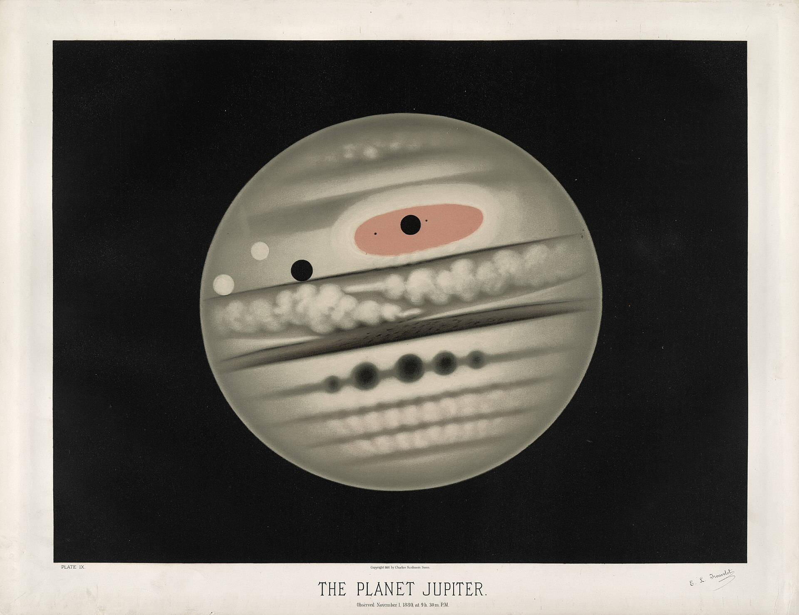
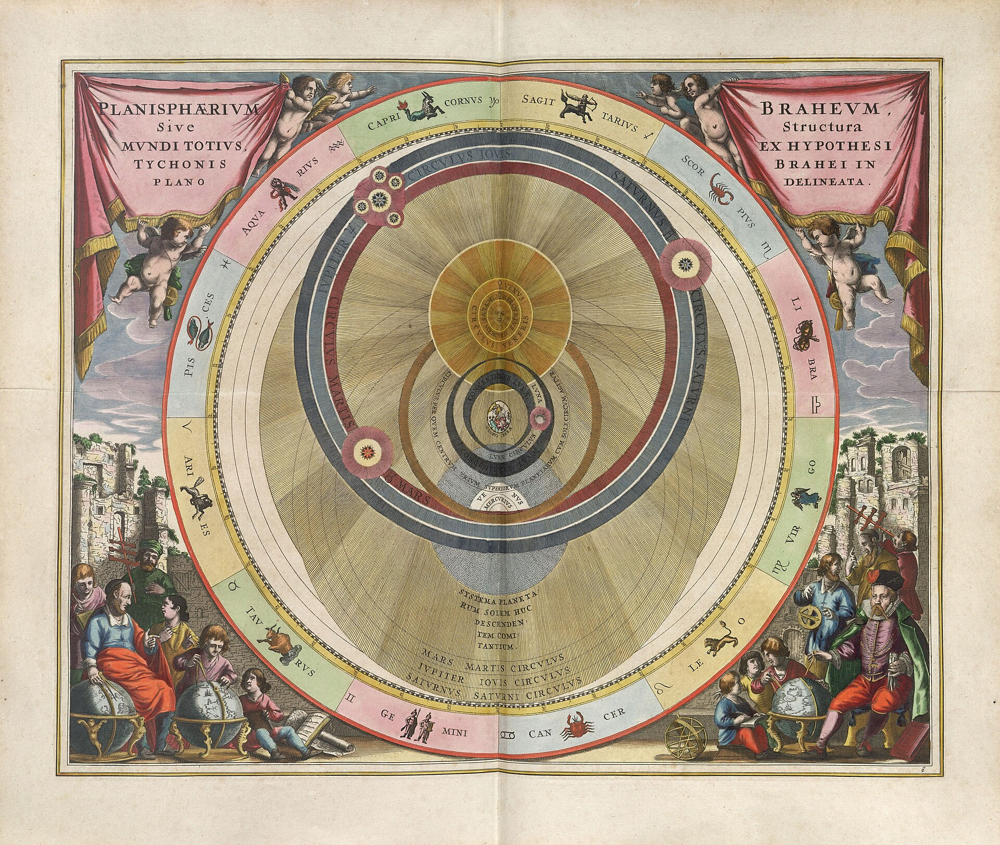
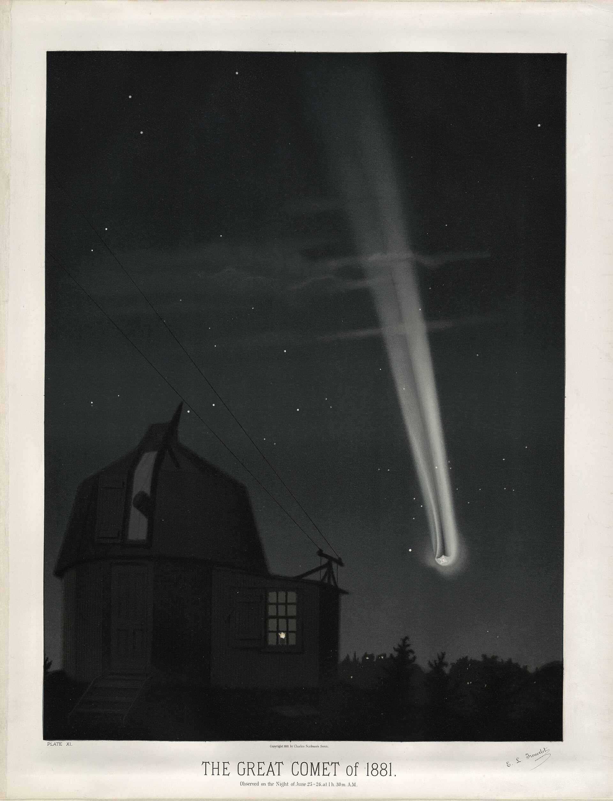
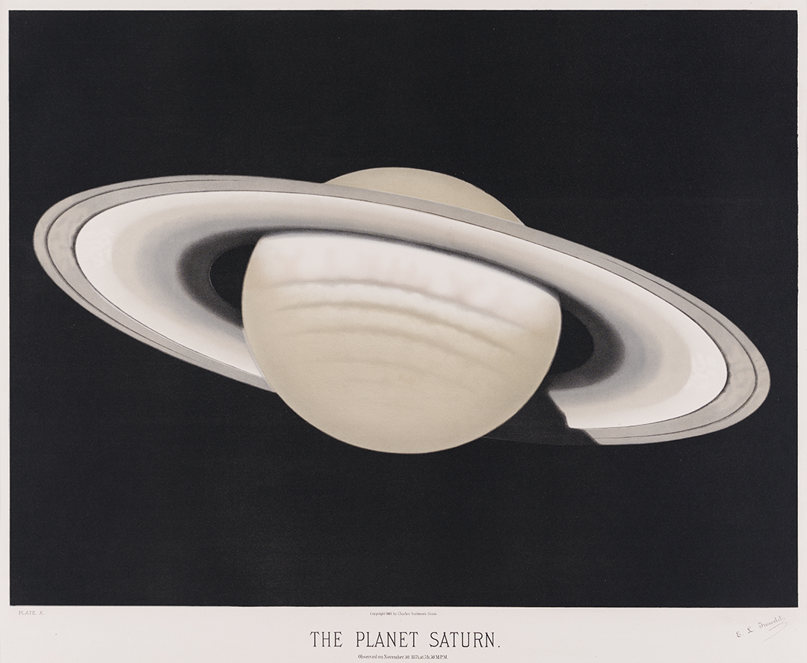

Орбита
Купите себе планету
Целую, с лунами и кольцами. Восемь миров галактики Орбита, от ледяной Глации до тёплой Тихой Гавани. Покрутите галактику, выберите свой мир и оформите на него купчую.
Выбрать планетуВосемь миров
Цена указана за планету целиком, со всеми лунами и кольцами. Листайте: галактика сама летит к той, о которой вы читаете.

Нокс-7
Небо настоящее
Планеты Орбиты мы придумали. А небо, в котором их хочется искать, вот оно: Млечный Путь над обсерваторией Ассы-Тургень, 2750 метров над морем, в 90 километрах от Алматы.
Девятнадцать секунд одной ночи, снятые с выдержкой.
Купчая за пять минут
Планета не переезжает: она остаётся на своей орбите, а у вас остаётся купчая с координатами, именем и правом назвать любую гору. Ваша купчая уже здесь и заполняется сама, пока вы выбираете.

Купчая на планету
Выбор
Планетане выбрана
Тип—
Расстояние—
Осмотр с орбиты
Облёт в галактике3 мин
Луны в комплекте—
Оформление
Право назвать горувключено
Цена планеты—
Планета ваша5 минут
Сначала выберите планету в каталоге.
Вопросы
- Доставка не нужна: планета остаётся на своей орбите.
- Купчая готова сразу после подписи.
- Это демо для хакатона, деньги не списываются.
Планета правда станет моей?
Нет. Орбита придумана, а магазин сделан как демонстрация для хакатона. Купчая шуточная и юридической силы не имеет.
Можно купить две планеты?
В демо купчая оформляется на одну планету. Выберите другую в каталоге, и купчая перепишется на неё.
Что входит в цену?
Планета целиком, все её луны и кольца, право назвать любую гору и место в каталоге Орбиты с вашим именем.
Почему у планет разная цена?
Чем мягче климат и выше обитаемость, тем дороже мир. Тихая Гавань с морями и +22 °C стоит больше лавового Пульсара-Мю.
Можно ли полететь туда?
Только в браузере: в галактике справа можно облететь каждую планету и рассмотреть её места.


Большая комета 1881 года и Сатурн: пастели Этьена Трувело.